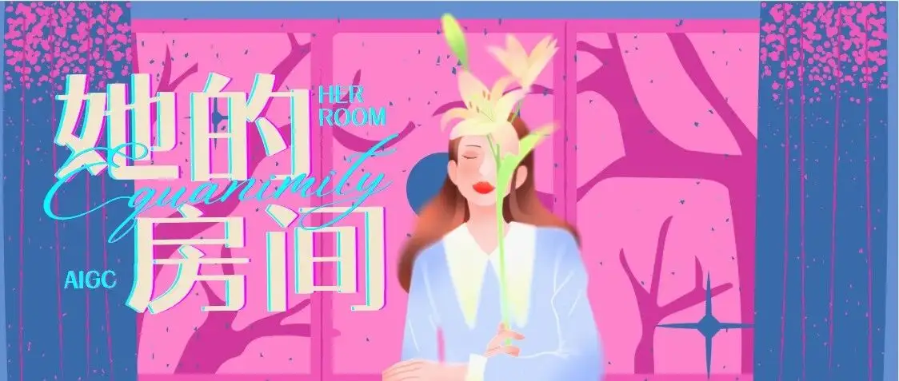
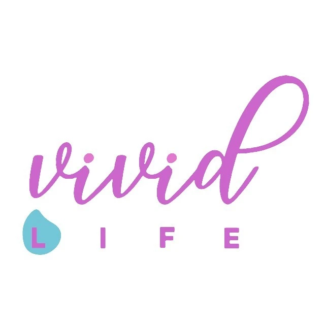
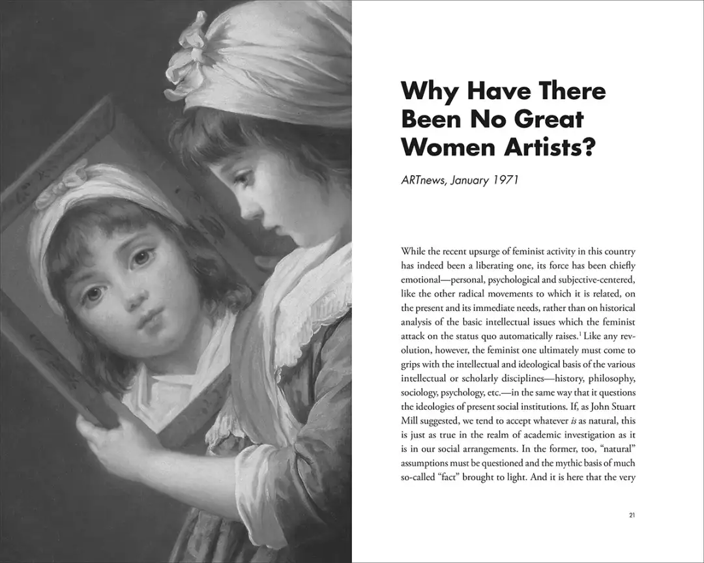
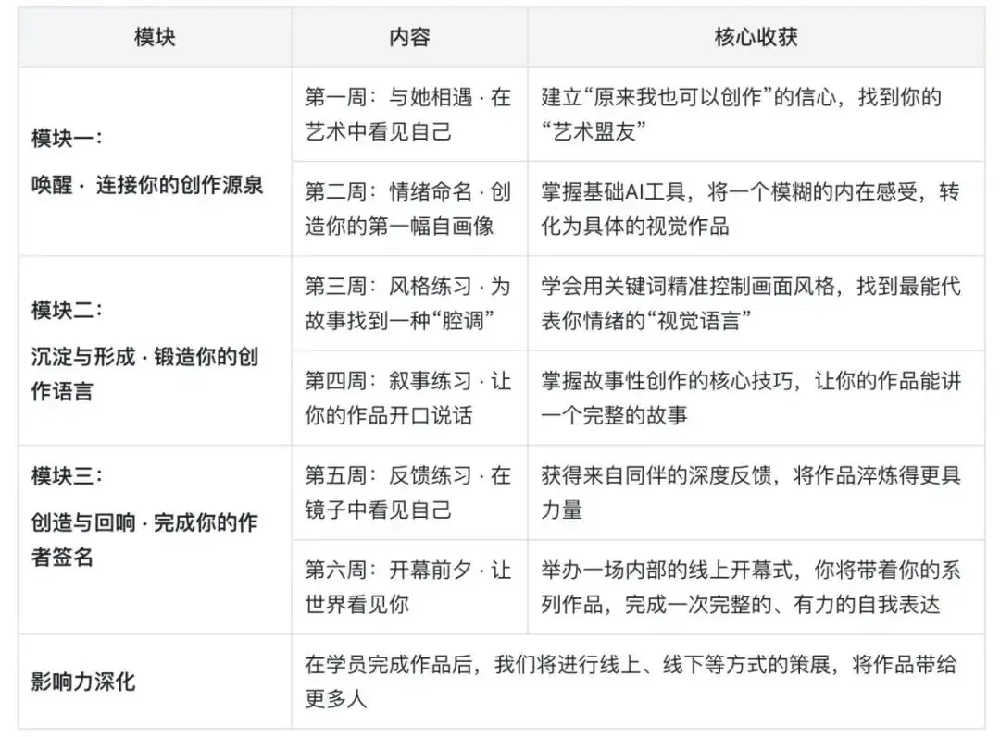
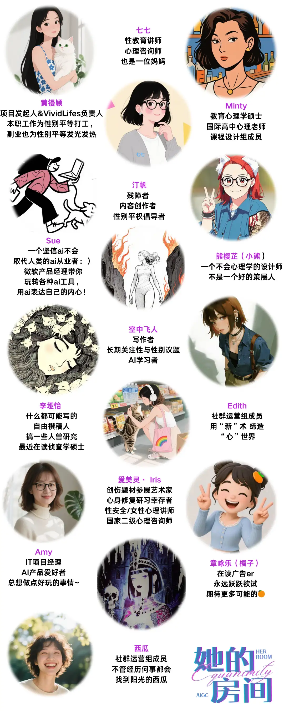
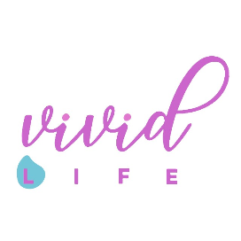

以下文章来源于VividLifes ，作者VividLifes

VividLifes 是一个以“性别”为思考视角，以“艺术”为发声方式的实践社群。我们致力于在安全与共情的场域中，激发关于个人身份经验的深度表达，倡导多元的观点碰撞，并提高公众传播，打破偏见，拓宽边界，构建更加包容的社会环境。


我们正在招募成员，
欢迎扫描文中问卷二维码，
报名加入我们😊
聚焦 AI+女性表达，
期待和你建造“她的房间HerRoom”
为什么没有伟大的女性艺术家？
1971年，艺术史家琳达·诺克林 (Linda Nochlin) 《为什么没有伟大的女性艺术家？》一文，在艺术史领域引起了广泛讨论。

这个问题，至今仍在回响。
为什么没有伟大的女性艺术家？
是因为女性缺乏表达的渴望吗？ 还是因为，她们的创作时间被无形的家务所吞噬？
是因为女性缺乏天赋吗？ 还是因为她们的天赋在“不够好”、“不重要”的自我怀疑中被反复消磨？
是因为她们不想进入“伟大”的艺术史吗？还是缺乏“入场券”？什么是“伟大”，这一标准的定义权，始终掌握在他人手中。
长久以来，无数女性的独特视角与创作冲动，就在这样的结构性困境中，被无声地搁置了。
久而久之，我们甚至习惯“沉默”。但实际上，女性真切的、承载经历与感受的经验和表达，本就不可替代，皆有其价值和意义。
过去，艺术创作的高门槛让许多创意难以落地；而今天，AI创作工具的普及，正以前所未有的方式，将创作的权利交还给每一个人。艺术，正在成为一个更开放、更包容的表达载体。我们相信，在这样的机遇下，将有机会诞生出更多“伟大的女性艺术家”。
项目介绍
VividLifes： 一个以“性别”为思考视角，以“艺术”为发声方式的实践社群。我们致力于搭建一个安全、包容、平等的交流场域，去激发女性的创作、回应那些让女性在表达之路上犹豫不决的困境。
我们相信，女性的个人视角，拥有不容忽视的力量。你的经验、你的感受、你的故事，是独一无二的，值得被看见、被听见。
我们相信，表达本身，就是一种行动。 每一次你为自己的感受命名、为自己的故事造像，都是一次对自我主体性的确认。
我们相信，你的声音，亦是我们的回响。当你勇敢地表达，你不仅代表了自己，也让更多沉默的女性，有机会在你的作品中获得共鸣。
带着这份相信，我们希望，借着AI浪潮，和更多女性一起，激活自己表达的勇气和能力，发出自己的声音，勇敢探索未知，一起重新定义我们对“伟大”的标准。
「她的房间 HerRoom：AIGC视觉行动计划」这是一个什么样的项目
*下文简称「HerRoom」
「HerRoom」是一个为期六周的女性AIGC视觉艺术表达创造营。我们希望以AI为“画笔”，通过创作、社群共学、导师赋能等相结合 的方式，陪伴你走过一条从看见自己、到学会以自己为方法进行创作的完整旅程。
在这间“房间”里，你将获得什么？
一个新视角：我们将引入女性主义艺术史的知识与案例，为你提供看待自我与世界的全新视角，让你的个人表达与更广阔的群体共鸣相连。
一种新语言：我们将手把手带你入门AI视觉创作，让你掌握一套强大且易上手的表达方法，将脑海中的创意轻松变为现实。
一群伙伴：你将收获一个由同频伙伴组成的“安全场”，在女性互相倾听、彼此支持的氛围中，摆脱表达顾虑，放心传递真实想法与感受，激发创造力。
一组作品：你将在这趟旅程的终点，完成真正属于你自己的视觉艺术作品，作为你自我探索的珍贵见证。
一个回响：你的结业作品将在我们为你搭建的线上/线下展览中呈现，让你的故事与世界相遇，获得更长久的生命力。
我们将开启怎样的旅程？
这不是一门美术课，这是一场自我发现的创作实践。你将跟随我们精心设计的三个模块，共六节课程，一步步进行自我探索与发现，并且将这些发现变成创造的动力与素材，在AI工具的支持下，完成自我表达。
课程形式：线上直播（腾讯会议） + 社群共学 + 导师分享
课程时间： 10月17日（或者18日）开始，每周一节，共6节课程
课程大纲：

我们也将邀请优秀的艺术家创作者到课程中进行创作经验的分享，敬请期待！
*实际上课内容可能会根据上课节奏、学员状态与反馈、艺术家时间等有略微调整。项目前期皆为线上，后续策展部分可能涉及线下，本项目所有解释权归VividLifes
正课之余，我们还准备了课外活动
姐妹观影趴：一起看艺术电影，和姐妹共同分享实时感受
艺术大声说：无论是学习心得，还是艺术相关的吐槽，这里都欢迎你大胆开麦！
灵感宝箱接龙：群内不定期放送讨论话题，爸妈再也不怕我没素材！
……
在这个旅程中陪伴你的她们

邀请：加入我们，一起造“Room”
我们正在寻找这样的你：
你对周围的世界有敏锐的感受力，内心戏丰富
你有一定的性别意识与批判精神，不满足于既定的游戏规则
你对AI创作感到好奇，但面对各种技术平台五花八门不知从何下手
你渴望拥有纯净的交流环境和展现自我的平台
你渴望创作，也渴望表达
……
报名流程
招生名额：仅限15-20位，以保证深度连接
费用收取： 本项目为公益项目，目前没有资助，因存在运营成本，我们对每位成员收取 100 元费用。一部分作为“防鸽费”，出勤满 4 节课并完成最终作品提交的，即可退还；另一部分用于线下展览共创以及运营所需费用，该部分的具体金额，我们将在报名问卷中收集大家的自主意愿。
报名截止：9月20日中午12:00
简历筛选与面试：9月20日-10月7日期间陆续联系入选的伙伴面试
面试结果通知：10月7日左右完成面试结果并且发送邮箱
报名方式：扫描下方二维码或点击下方链接
（https://rwtsk6l988.feishu.cn/share/base/form/shrcnLpcatIlUbzXz2JSzzT1H6b）
如果你准备好了，就推开这扇门吧
我们在这里，等你来造造“Room”
关于报名和项目有疑问欢迎扫描上方二维码进群，我们的伙伴将会为你答疑
【合作邀约】
本项目计划在课程结束之后，
为成员的作品举办不同形式的线下展览，
如果有线下空间感兴趣，欢迎在后台联系我们，期待~

VividLifes 希望成为一个以“性别”为思考视角，以“艺术”为发声方式的实践社群 。我们致力于在安全与共情的场域中，激发个体经验的深度表达，也倡导多元的观点碰撞，并通过这些个体经验的公众表达，打破偏见，拓宽边界，构建更加包容的社会环境。
内容撰写｜镘颖、汀帆
推文编辑｜橘子、空中飞人
文章审阅｜VividLifes团队
微信推送机制调整了
有的朋友收不到VividLifes的推送了
为了观看完整的展览
请点击“在看”并将VividLifes“设为星标”
帮忙点“点赞”，点“在看”
在探索“性与性别”多元叙事的路上，让我们彼此看见